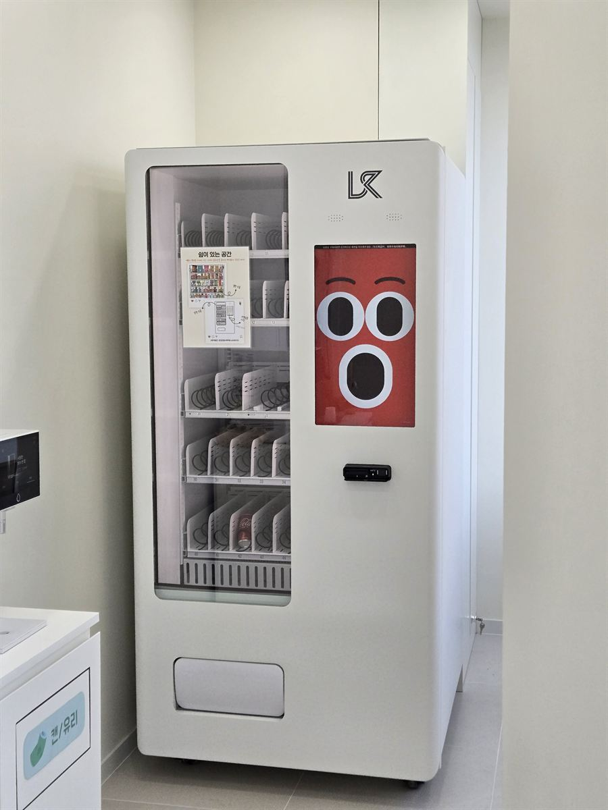

영덕 무인자판기 설치 완료 — 학원 휴게 공간 음료·간식 자판기

학원은 수요가 하루 종일 깔려 있지 않고 10분에 몰리는 곳입니다. 수업 중에는 복도가 텅 비어 있다가, 종이 치면 그 짧은 시간에 학생들이 한꺼번에 쏟아져 나옵니다. 그 10분을 위해 매점을 두거나 사람을 세워 둘 수는 없습니다. 위 사진은 그 시간대만 기계가 받아 주도록 만든 현장입니다. 휴게 공간 정수기 옆 벽면에 냉장 음료·간식 자판기 한 대를 세웠습니다.
어떻게 구성했나
칸을 짤 때 기준으로 삼은 건 "10분 안에 고를 수 있는가"였습니다. 종류를 잔뜩 늘리면 줄이 늘어지고, 뒤에 선 학생은 못 사고 들어갑니다. 그래서 품목 수를 욕심내지 않고 잘 나가는 몇 종을 여러 칸에 겹쳐 넣었습니다. 사진에서 보시면 같은 모양의 상품이 한 줄에 쭉 들어가 있는데, 이렇게 해야 피크 때 한 칸이 비어도 옆 칸에서 바로 나옵니다.
품목은 탄산·이온음료·생수를 아래쪽 냉장 칸에, 가볍게 집어 가는 과자류를 위쪽에 배치했습니다. 자리를 정수기 옆으로 잡은 것도 이유가 있습니다. 마시는 자리와 버리는 자리를 한곳에 모으면 복도에 캔이 굴러다니지 않습니다. 실제로 기계 바로 옆에 캔·유리 분리수거함을 같이 두었습니다.
앱으로 원격 관리, 설치는 반나절
학원은 원장님이 수업에 들어가 있는 시간이 깁니다. 기계 앞에 가서 재고를 눈으로 세는 방식은 며칠 못 갑니다. 이 자판기는 칸마다 몇 개 남았는지 휴대폰 앱에 숫자로 뜹니다. 다 팔린 칸은 따로 표시돼 수업 사이에 한 번 열어 보면 끝이고, 시험 기간처럼 아이들이 오래 남는 주에 맞춰 미리 채워 둘 수 있습니다.
결제는 카드와 간편결제만 받습니다. 학생들이 쓰는 자리에서 현금을 받으면 잔돈 시비와 동전 걸림이 반드시 생기고, 그때마다 원장님이 수업을 끊고 나와야 합니다. 안 받는 쪽이 조용합니다. 설치에 필요한 건 220V 콘센트 한 개와 기계 폭만큼의 벽면뿐이고, 배송·수평 조정·상품 적재·시험 결제까지 반나절이면 끝납니다. 수업이 없는 오전에 들어가면 그날 저녁 수업부터 바로 쓰실 수 있습니다.
구매·임대·렌탈 모두 가능
자리를 오래 쓰실 거라면 구매가 총비용으로는 가장 낫습니다. 다만 학원은 원생 수에 따라 사정이 달라지는 업종이라, 처음부터 목돈을 넣기보다 임대나 렌탈로 한두 학기 돌려 보고 결정하시는 분들도 많습니다. 한 대로 시작했다가 반응이 좋으면 층을 나눠 한 대를 더 들이는 순서도 흔합니다. 어느 쪽이든 설치비는 무료이고 세금계산서도 발행됩니다. 놓을 자리 사진과 가로·세로·높이 치수를 보내 주시면 들어갈 기종과 칸 구성을 먼저 잡아 보내 드립니다.
영덕 무인자판기 상담은 무료
영덕읍 중심가와 영덕군청·영덕터미널 일대, 대게 거리로 알려진 강구면 강구항, 영해면·병곡면의 고래불해수욕장 권역, 축산면 축산항, 해안도로를 낀 남정면 삼사해상공원 쪽, 내륙의 지품면·달산면·창수면까지 영덕 전역에 방문합니다. 영덕은 성수기에 외지 손님이 몰리고 평소엔 주민이 쓰는 지역이라, 같은 기계라도 자리에 따라 들어갈 품목이 꽤 달라집니다. 학원뿐 아니라 무인 스터디카페, 펜션·민박 입구, 체육시설, 사무실 건물 1층, 공장 휴게실처럼 사람은 머무는데 파는 사람이 없는 자리면 한 대로 충분히 시작할 수 있습니다. 현장을 보고 자리와 품목까지 같이 잡아 드리며, 상담과 견적은 무료입니다.
※ 사진은 H포스가 시공한 설치 사례이며, 글에 적힌 지역의 현장 사진은 아닙니다.
📞 영덕 무인자판기 설치 상담 010-6832-1994